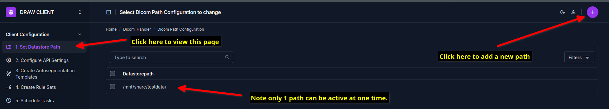

Configuration of the Datastore path
The datastore path is the directory from where the DRAW client will import the DICOM files for autosegmentation. This can be a local directory or a network directory accessible by the local machine. The DRAW client is designed to automatically import the DICOM files from this directory at pre-configured intervals.

Note that if you are running the dockerized version of the DRAW client, leave the default path as is.
To configure the datastore path, please follow the following steps:
In the sidebar in the admin panel click on the link called “DICOMPath Configuration”.
{kind=link}
The page that appears will be blank with a button called “Add DICOM Path Configuration”. Alternatively you can click on the circular button with a plus sign at the top right corner of the page.
{kind=link}
After this in the page that appears you will see at text box which allows you enter the path.
{kind=link}
Warning
If you are running the dockerized version of the DRAW client, do not change the path. If you are using the alternative installation method, you can change the path to the directory where the DICOM files need to be imported from.
Remember to click on the Save button to save the changes. The save button is located at the bottom right of the page and you may need to scroll down to see it.
After you have save the path, you will be bought back to the original page. Here you will see the path you just entered in the list of paths.
{kind=link}
Note
Only a single Datastore Path is allowed to be configured. If you need support to configure multiple datastore paths please raise a support ticket.